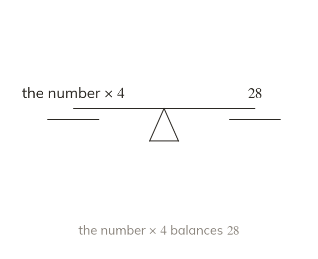

Two sides, one balance
An equation says two expressions have the same value. A word equation writes that balance as a sentence first.
An equation states that two expressions have the same value, joined by an equals sign that means 'has the same value as'. A word equation writes that balance in a sentence before any letters appear.